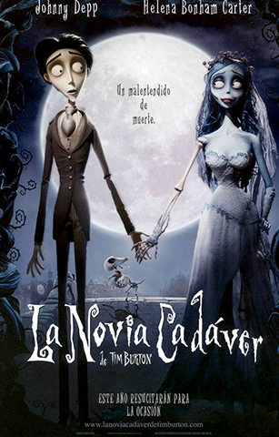

- Director: Tim Burton
- Producción: Tim Burton
- Guión: John August
- Música: Danny Elfman
- Presupuesto: 40 millones
- Año: 2005
- Género: Animación, fantasía
- Duración: 75 minutos
- País: Estados Unidos
- Productora: Laika y Tim Burton Productions
En un pequeño, triste y reprimido pueblo victoriano, dos tímidos jóvenes están a punto de casarse - aunque no se han visto nunca antes.
Los burdos y arribistas magnates de las conservas de pescado Nell y William Van Dort (con las voces de Tracey Ullman y Paul Whitehouse) siempre han soñado con formar parte de la alta sociedad - pero si bien no les falta riqueza, carecen por completo de la clase necesaria.
Por el contrario, a los aristócratas de toda la vida Maudeline y Finis Everglot (con las voces de Joanna Lumley y Albert Finney), descendientes directos del duque de Everglot - algo que no tendrán reparos en manifestar a cualquiera que quiera escucharles - les sobra clase pero les falta dinero. Su dinero se ha agotado hace tiempo, y todo lo que les queda de valor es su nombre y su posición social... y, como parece, su hija (con la voz de Emily Watson). Si bien nunca han visto ninguna valía en ella, puede que sea su pasaporte para volver a la escala social, ya que parece que los Van Dort tienen un hijo soltero, Victor (con la voz de Johnny Depp).
Los Everglot están dispuestos a transigir y casar de mala gana a Victoria con el hijo de los espantosos Van Dort - después de todo, un nuevo rico es rico a fin de cuentas. Se llega a un acuerdo, y las dos familias están muy nerviosas, ya que todo el mundo está muy excitado por los inminentes esponsales... excepto los novios. Pero de todos modos todo el mundo sabe que el matrimonio no tiene nada que ver con el amor - no hay más que preguntarles a Maudeline y a Finis.
Victor y Victoria se ven por primera vez la víspera de su boda, cuando las familias se reúnen para presentar adecuadamente a los próximos recién casados, a lo que seguirá inmediatamente un ensayo de la boda. Si bien es difícil decir quien es más tímido, tras su primera reunión parece posible que, contra todo pronóstico, no se haya perdido la oportunidad de que Victor y Victoria disfruten de un auténtico amor. Pero en el ensayo, Victor mete tanto la pata - incluso antes de prender fuego accidentalmente al vestido de su futura suegra - que el pastor Galswells (con la voz de Christopher Lee) le dice que se vaya hasta que pueda aprender sus frases correctamente.
Humillado, se dirige hacia el oscuro bosque que rodea el pueblo. Una vez solo, es capaz de recitar sus votos perfectamente, llegando incluso hasta poner suavemente el anillo de boda sobre la raíz de un árbol como toque final. Pero, después de todo, no es una raíz.
De manera aterradora, surge de la tierra el extraño y hermoso cuerpo en descomposición de una mujer que lleva los restos destrozados de un traje de novia, con el anillo de Victoria en su huesudo dedo. Parece que Victor se ha prometido sin darse cuenta a la Novia Cadáver (con la voz de Helena Bonham Carter).
Desde que fue misteriosamente asesinada en su noche de bodas, la Novia Cadáver ha esperado, desconsolada, a que regresase su novio y la reclamase. Si bien es posible que su corazón haya dejado de latir hace tiempo, su búsqueda del auténtico amor, y de un esposo con el que compartir su descanso eterno, no ha terminado. Victor se ha convertido por error en ese novio, y es arrastrado bajo tierra al País de los Muertos, una tumultuosa inversión de papeles de la aburrida vida que siempre ha conocido - en el País de los Muertos, los pubs están siempre abiertos y los cadáveres están más llenos de vida que cualquier cosa que se pueda encontrar arriba en el aburrido y sombrío País de los Vivos.
Victor intenta en vano encontrar el camino de vuelta a Victoria, que está esperando desconsolada en el País de los Vivos, incapaz de convencer a nadie de que una mujer muerta ha arrastrado a su prometido al inframundo. En lugar de ayudar a su hija, los Everglot conciertan a toda prisa un segundo matrimonio, esta vez con el misterioso y siniestro Barkis Bittern (con la voz de Richard E. Grant), que casualmente está en el lugar adecuado y en el momento adecuado para tomar la mano de Victoria...
Mientras la Novia Cadáver está decidida a no dejarle escapar de los lazos de su nefasto matrimonio, Victor debe encontrar una manera de volver del País de los Muertos, y a los brazos del amor de su vida.
